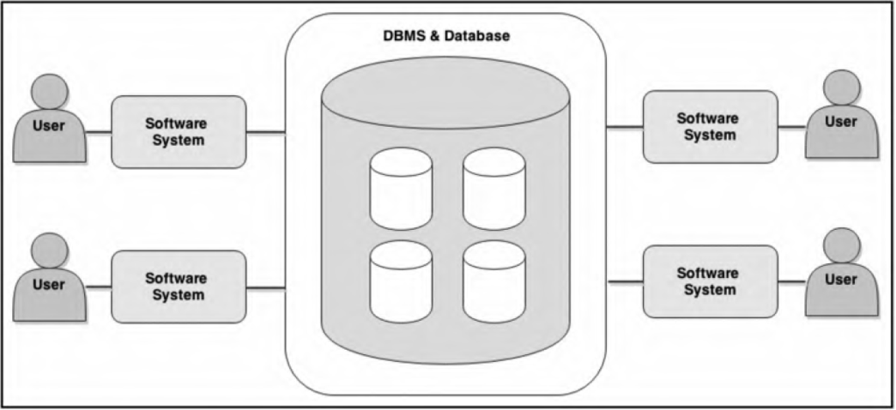
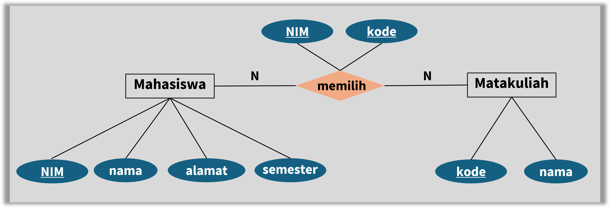
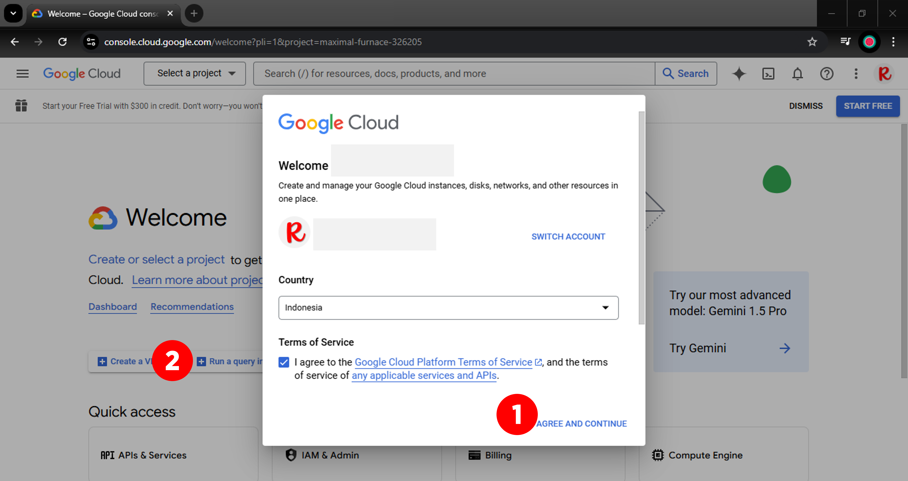
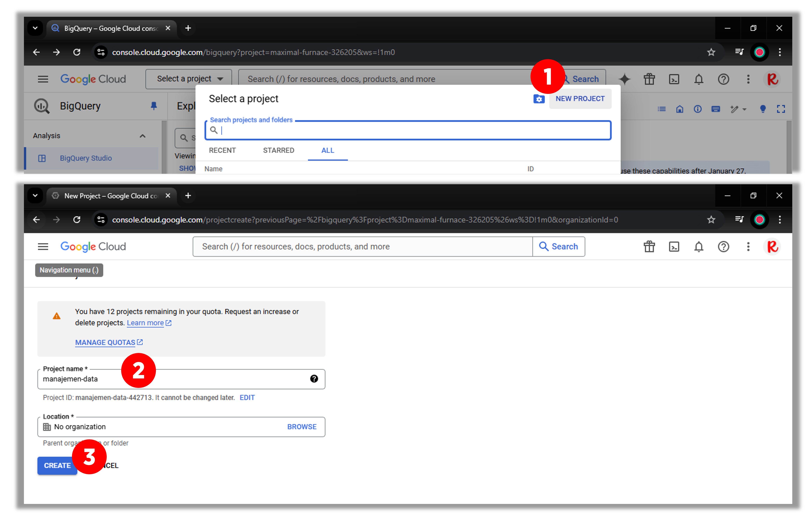
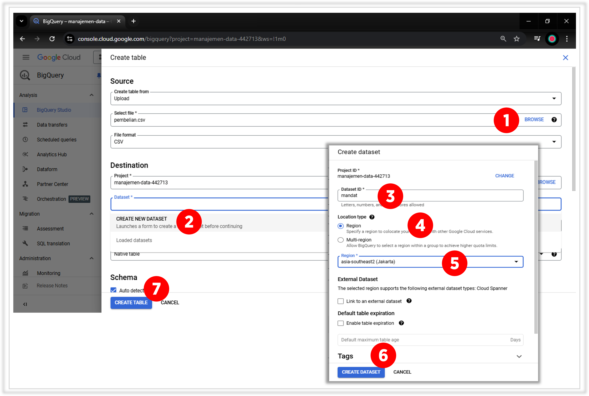
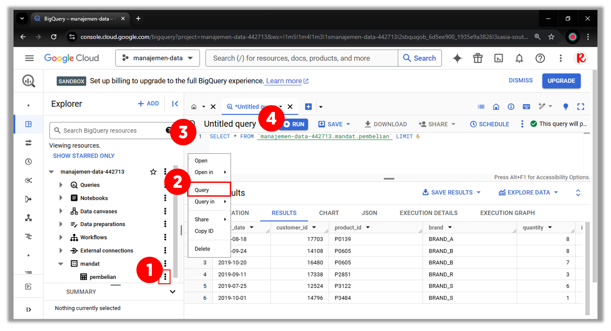

5 Pengantar Basis Data
5.1 Konsep dasar
Kumpulan data yang saling berhubungan yang disimpan secara bersama sedemikian rupa tanpa pengulangan (redundancy) yang tidak perlu, untuk memenuhi berbagai kebutuhan.
Beberapa tujuan dari basis data adalah:
Security and protection, pencegahan akses terhadap pengguna yang tidak terdaftar (sah);
Facilitation of multiple users, memungkinkan pengguna dalam jumlah yang besar;
Ease of data access and data change, kemudahan akses dan perubahan data;
Clarity, data disimpan dengan bahasa baku sehingga tidak membingungkan pengguna
Availability, data dapat diakses kapanpun.
Basis data digunakan jika:
Ukuran data besar
Data perlu diperbarui
Data relevan untuk jangka waktu yang cukup lama
Data digunakan secara bersamaan oleh banyak pengguna
5.2 Sistem dan model basis data
Untuk mengelola basis data dibutuhkan beberapa komponen antara lain (Foster 2023):
Hardware : Komputer, laptop, server, dan lain-lain
Sistem operasi : Windows, Linux, MacOS
Database : data yang disimpan
Aplikasi : MySQL, PostgreSQL, SQL Server, bigquery
User : Admin, klien
Aplikasi lain : Web browser
Penggunaan komponen-komponen di atas diilustrasikan pada Figure fig-db-konsep.

Model basis data yang diperkenalkan dalam panduan ini adalah entity relationship diagram (ERD). Model ini tersusun atas beberapa komponen sebagai berikut:
Entity, objek (entitas) yang dikumpulkan informasinya seperti: mahasiswa, mata kuliah, pembeli, barang, dan sebagainya.
Attribute, informasi yang menjelaskan entitas.
primary key, atribut yang digunakan sebagai identitas dari sebuah entity
foreign key, atribut yang digunakan untuk melihat (lookup) ke entity pemilik relasi tersebut
Relationship, hubungan antar entitas.
Cardinality, jumlah entitas yang dapat berelasi dengan entitas yang lain, seperti: 1-to-1, 1-to-N, N-to-1 dan N-to-N.

Ilustrasi pada Figure fig-erd-fk-nn di atas menunjukkan:
Entity, mahasiswa dan matakuliah.
Attribute,
mahasiswa terdiri dari
NIMsebagaiprimary key, nama, alamat, dan semester.matakuliah, terdiri dari
kodesebagaiprimary keydan nama.foreign key, terdiri dari
NIMdankode.
Relationship, hubungannya berupa mahasiswa memilih matakuliah.
Cardinality, N-to-N, banyak mahasiswa memilih banyak matakuliah
5.3 Pembuatan basis data
Platform analisis data berbasis cloud yang dikembangkan oleh Google yang dirancang untuk mengolah dataset besar dengan kecepatan dan efisiensi tinggi
Aplikasi yang digunakan untuk membuat basis data adalah bigquery karena dapat digunakan dengan menggunakan akun Google. Berikut langkah-langkah pembuatan basis data di bigquery.
- mengunjungi laman Console Google Cloud selanjutnya akan muncul kotak dialog sebagaimana pada Figure fig-bq-1 kemudian memilih layanan bigquery.

Membuat projek (basis data) seperti pada Figure fig-bq-2.
membuat basis data baru
memberi nama basis data dengan manajemen-data
menyelesaikan pembuatan basis data

- membuat tabel atau mengisi basis data dengan menggunakan data set yang sudah ada,
pembelian.csvsebagaimana pada seperti Figure fig-bq-3.

- mengakses tabel
pembeliandi dalam schema (dataset)mandatpada basis datamanajemen-datayang diilustrasikan pada Figure fig-bq-4.
